Static screens of a NetHack-style action RPG for the phone, played like Höyry. Open a screen on a phone to see it at real size; rotate for landscape. Nothing moves and nothing is a game yet. The plan is in docs/plan.md.
Rooms and corridors, a light radius, remembered rooms in the dark, a minimap that opens to the whole floor.
The player decides: which exit to take next, whether to open the door now or clear the hall first, whether the blue sword is worth stepping into the hiisi's reach, and whether the chest behind the water is worth the detour before the stairs.
Open: floorOpen: whole floor map
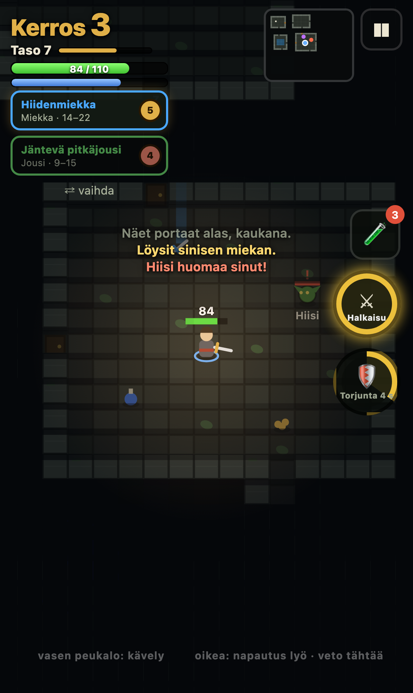
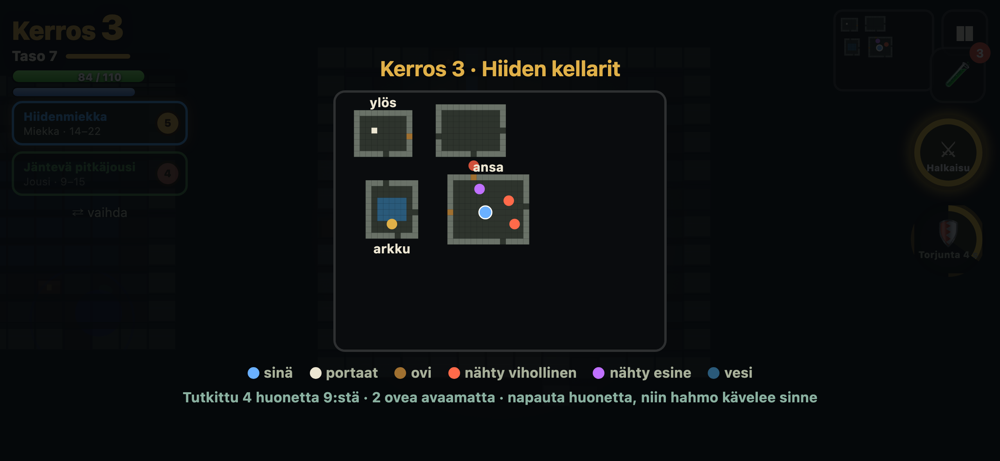
The same hands as Höyry: left thumb walks, right thumb taps to hit the nearest enemy or drags to aim. The weapon in the hand sets the style. Two technique buttons from the tree and one potion sit above the right thumb.
Sword: where to stand so the arc catches both hiisi, and when to hold for the parry against the bear's charge.
Bow: how long to hold the draw (a full draw pierces the row) against how many steps the hiisi still needs to reach you.
Magic: where to land the fireball circle so it burns three, and whether the mana left is worth a Liekkiseinä or must be saved for Suoja.
Shadow: which enemy's back is open to a backstab, which cone to cross, and when to spend the smoke.
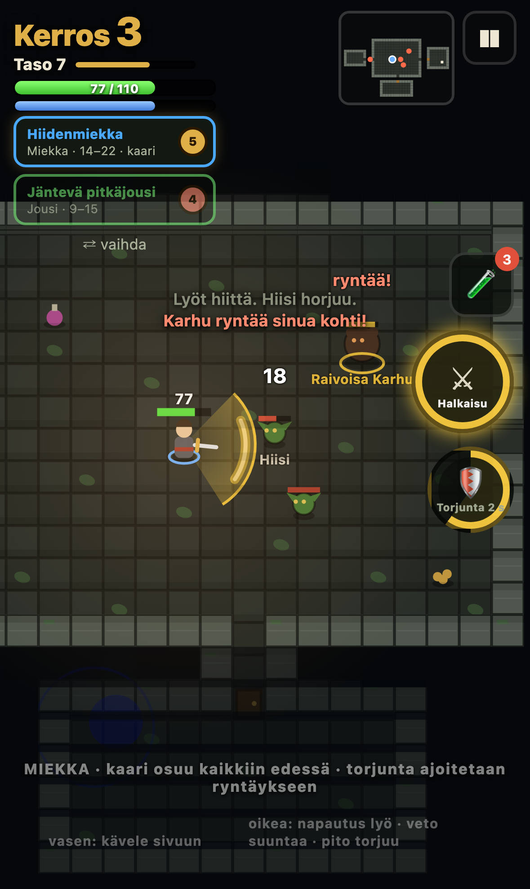
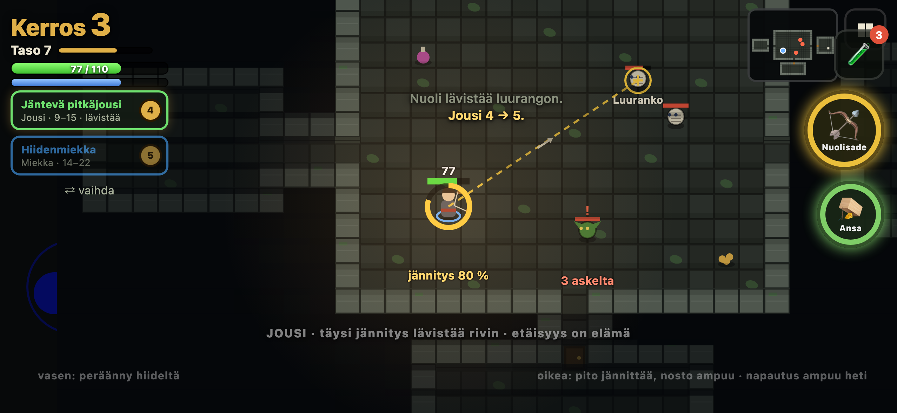
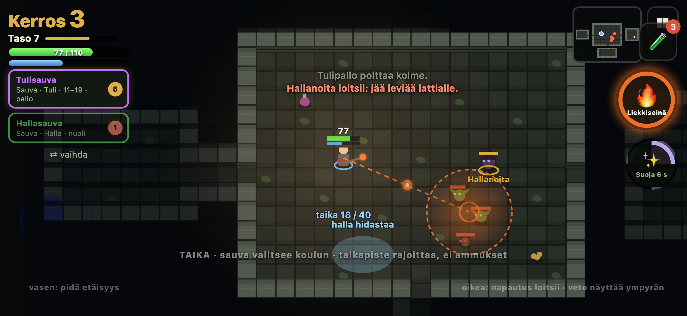
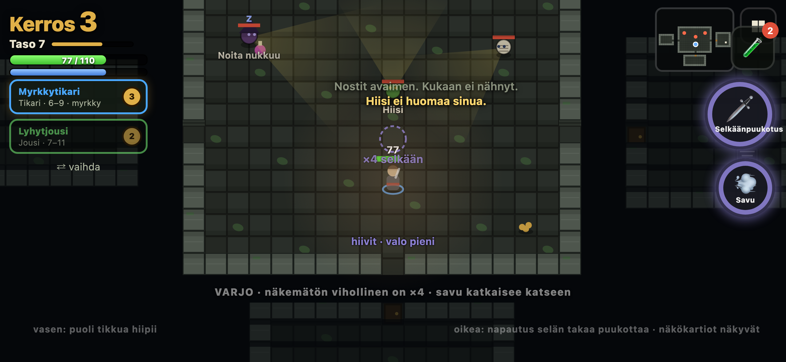
Four rows, one per style. A node costs one point from a character level, and the deeper nodes also require the style's use-level (the red number). Side nodes are small passives.
The player decides: where the two unspent points go, and whether to buy deeper in the sword row now or save a point for the magic row that is about to unlock with Tuli 6. The screen also says which nodes the floor cap holds shut, so the player knows what depth will open.
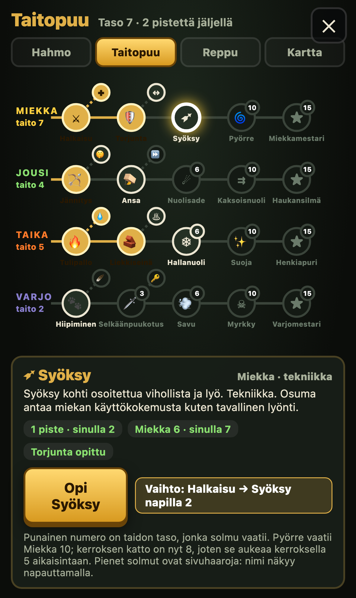
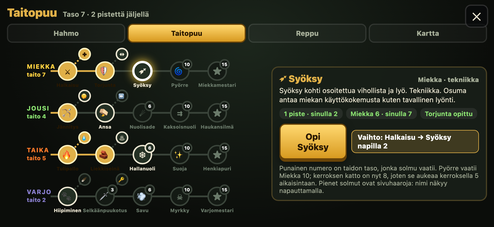
Level and experience, the derived numbers, and the six use-levels with their progress and the floor cap. The two highest skills name the build.
The player decides: which skill to train on the next floor. Miekka is at the cap, so hits with the sword give nothing until the stairs. Jousi just rose and climbs fast, so this is the floor to shoot. The note on the screen says why switching is cheap.
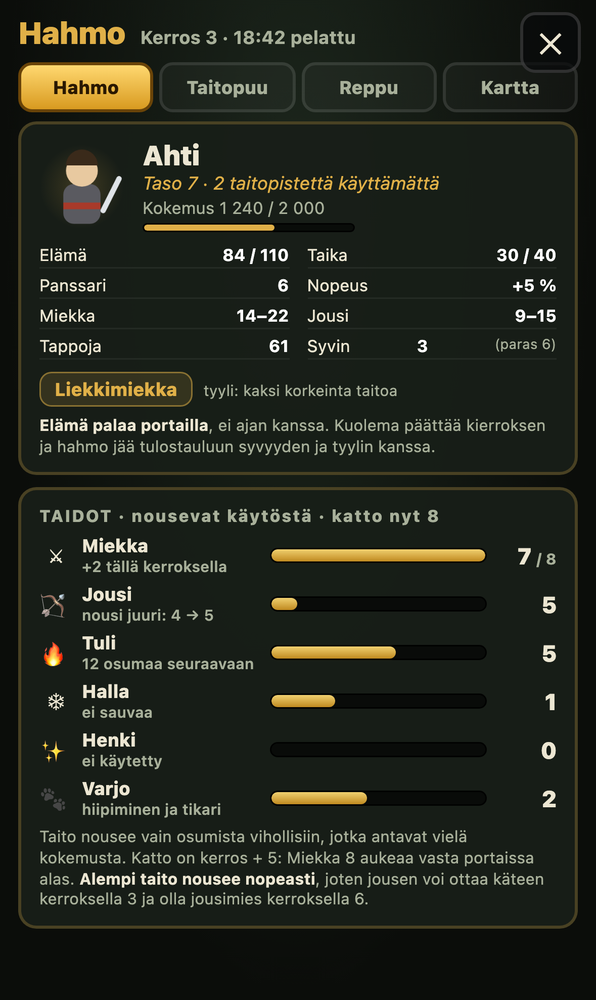
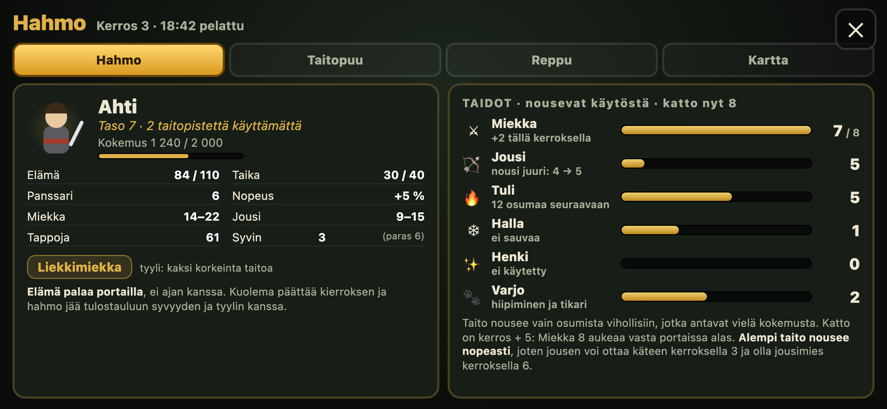
Two hands, a coat and a ring slot, a pack of fifteen. A tapped item shows its card beside what is in the hand, the way Höyry's gun pickup does. Unknown potions, scrolls and rings carry a red question mark.
The player decides: whether the epic fire staff goes into hand 1 (and the sword to the pack), whether to drink the unknown potion now with full health, and what to drop when the pack is full.
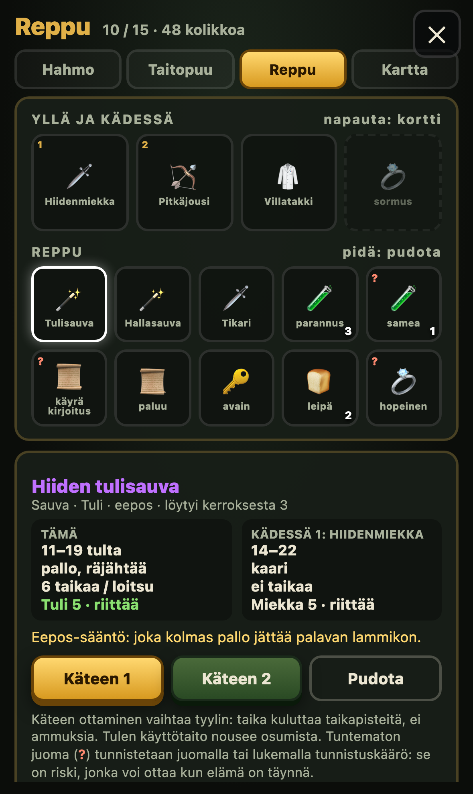
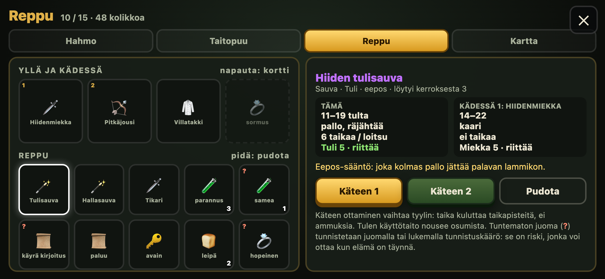